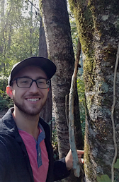

Eric Shershen - Ph.D. Graduate Student
B.A., Augustana College, 2018
Email
eshershe@utk.edu
Address
430 Hesler Biology Building
Members of the Budke Lab are active leaders with the Spring Wildflower Pilgrimage in the Great Smoky Mountains National Park. They lead walks focusing on ferns and mosses. Because of COVID-19, for a second year we will unfortunately not be able to meet face-to-face in the GSMNP; instead we will hold a VIRTUAL pilgrimage beyond the Park from May 8-16, 2021. Click here for more info.
More info here.

Hiking somewhere fun.